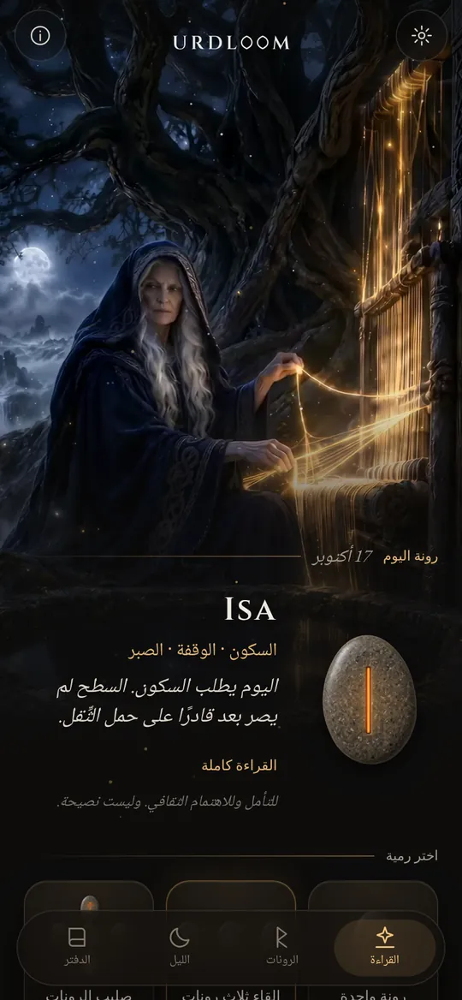
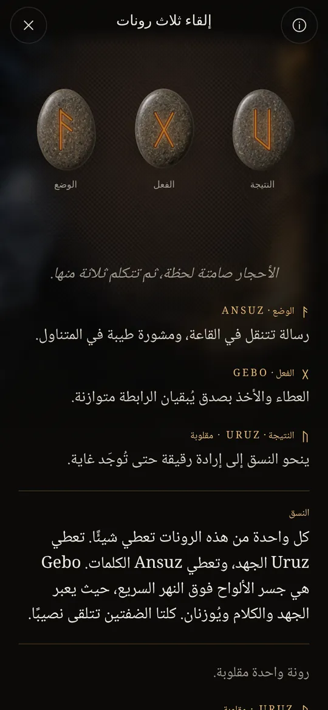
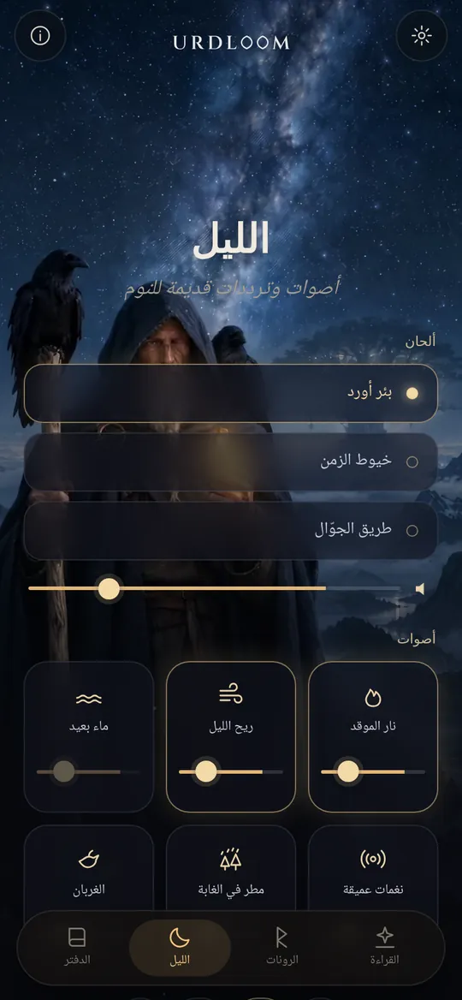
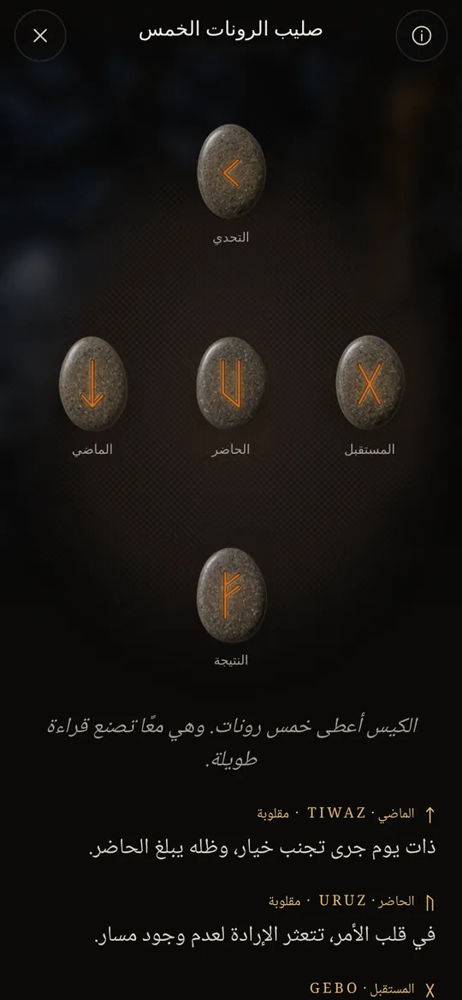

ثلاث نساء عند بئر
في القصائد الإسكندنافية القديمة، تجلس ثلاث نورنات عند بئر تحت إغدراسيل، شجرة العالم. يسقين جذورها، وينقشن العصيّ، ويقدّرن حياة كل من يولد. كبراهن أورد. يعني اسمها ما قد وقع، وباسمها سُمّيت البئر.
يستمد Urdloom اسمه منها، ومن النول الذي قيل إن القدر يُنسج عليه. ويحافظ التطبيق على تلك الروح: كيس من الحجارة في يدك، وقماش على الأرض، وقراءات مكتوبة بصوت الملاحم لا بصوت الأبراج.

من هناك يأتين عذارى واسعات المعرفة، ثلاثٌ من البحيرة التي تحت الشجرة.Völuspá، المقطع 20
أمسك، هزّ، أفلِت
أمسك الكيس فتخشخش الحجارة في يدك. أفلته فتطير إلى القماش، وتتدحرج، وتستقر، ثم تنقلب واحدًا تلو الآخر. وتظهر القراءة تحتها.

رونة واحدة
حجر واحد لليوم الذي أمامك، أو لسؤال جوابه نعم أو لا. المسه فيُرمى.


إلقاء ثلاث رونات
الوضع، الفعل، النتيجة. تُقرأ من اليسار إلى اليمين كملحمة قصيرة، ثم معًا: خيط ختامي يُظهر كيف يحادث بعضها بعضًا.

صليب الرونات الخمس
الماضي والحاضر والمستقبل على الخط الأوسط، والتحدي في الأعلى، والنتيجة في الأسفل، وأنت في القلب منها.




كُتبت كل قراءة يدويًا: الرونات الأربع والعشرون، وكل ثنائي منها، والتركيبات الثلاثية كلها وعددها 2024، في كل واحدة من اللغات الاثنتين والعشرين. لا شيء يُولَّد وأنت تنتظر.

الرونات الأربع والعشرون
الفوثارك القديم أقدم أبجدية رونية، ونُقش من نحو القرن الثاني إلى القرن الثامن. تتوزع علاماته الأربع والعشرون على ثلاث مجموعات في كل منها ثماني علامات، تُسمّى المجموعة منها ætt، وتحمل اسم الإله الذي تتصدرها رونته. المس حجرًا لتقرأه.
مجموعة فراير
مجموعة هاغال
مجموعة تير
تبقى أسماء الرونات بصيغتها القديمة في كل لغة. فهي أسماء العلامات نفسها، أعاد العلماء بناءها من قصائد الرونات وأقدم الأبجديات.
تاريخ موجز للرونات
الرونات حروف قبل أي شيء آخر. نقشتها الشعوب الجرمانية في الخشب والعظم والمعدن والحجر نحو ألف وخمسمئة عام. وهكذا وصلت إلينا العلامات وعادة إلقاء القرعة القديمة.

قرعة على قماش أبيض
يكتب المؤرخ الروماني تاسيتس أن الشعوب الجرمانية تقطع غصنًا من شجرة مثمرة إلى قطع صغيرة، وتسمها بعلامات، ثم تنثرها على قماش أبيض. ويرفع الكاهن أو ربّ البيت ثلاثًا منها، واحدة بعد أخرى، ويقرؤها. لا يقول إن تلك العلامات كانت رونات، لكن الحركة هي نفسها التي يحفظها Urdloom.
النقوش الأولى
مشط من العظم عُثر عليه في مستنقع Vimose في الدنمارك يحمل واحدًا من أقدم النقوش الرونية المعروفة، وهو كلمة واحدة: harja. وتُظهر رؤوس رماح ومشابك وتمائم من القرون نفسها أن الكتابة كانت قد انتشرت في أرجاء الشمال.
الصف كاملًا على حجر واحد
على حجر Kylver من غوتلاند نقش أحدهم العلامات الأربع والعشرين كلها بترتيبها، وهو أقدم فوثارك كامل بين أيدينا. ويستمد الصف اسمه من حروفه الستة الأولى: f، u، th، a، r، k.
القرنان الذهبيان
يحمل أحد قرني Gallehus الذهبيين في الدنمارك سطرًا من شعر جناسي: أنا Hlewagastiz بن Holt صنعتُ القرن. وهو من أقدم أبيات الشعر في أي لغة جرمانية.
ست عشرة علامة لعصر الفايكنغ
في إسكندنافيا تُختصر الأبجدية إلى ست عشرة علامة، هي الفوثارك الأحدث. وتُقام آلاف الأحجار التذكارية بحروفها، ومنها الأحجار الكبيرة في يلينغ بالدنمارك.
تدوين القصائد
يدوّن نسّاخ آيسلنديون قصائد الإيدا. في Völuspá تجلس النورنات عند بئر أورد، وفي Hávamál يتدلى أودين تسع ليالٍ على الشجرة التي تعصف بها الريح، ثم يلتقط الرونات بصرخة.
بيت شعر لكل رونة
تمنح قصائد الرونات من النرويج وآيسلندا، ومعها قصيدة أنجلوسكسونية أقدم، كلَّ رونة بيتًا قصيرًا: الماشية تثير الشقاق بين الأهل، والبَرَد أبرد الحبوب، والجليد شديد الانزلاق. وكثير مما نعرفه عن معاني الرونات يأتي من هذه الأبيات.
القراءة من جديد
استخدام الرونات للتأمل إحياء حديث يقوم على تلك القصائد وعلى صور الإيدا. ويقف Urdloom في هذا التقليد بوضوح: لا يدّعي أنه عرّافة قديمة، بل يقرأ العلامات القديمة بعناية فحسب.

أصوات وترددات قديمة للنوم
حين ينقضي النهار يخرج الجوّال تحت النجوم. اختر لحنًا، وضع فوقه أصواتًا، واضبط المؤقت. تواصل الأصوات العزف والشاشة مطفأة، ثم تخفت وحدها.
ثلاثة ألحان: بئر أورد، وخيوط الزمن، وطريق الجوّال، قائمة على الغناء الحلقي والطبل الإطاري والتاغلهاربا ذات القوس.
ست طبقات تمزجها، لكل منها مستواها الخاص: نار الموقد، وريح الليل، وماء بعيد، ونغمات عميقة، ومطر في الغابة، والغربان.
صُنع كل صوت خصيصًا لـ Urdloom. لا شيء يُشغَّل من الإنترنت.
أشياء صغيرة لها شأن
- رونة كل صباح
- ينتظرك حجر مقلوب على وجهه في الشاشة الأولى. وإن شئت، تخبرك ملاحظة قصيرة كل صباح بالرونة التي سُحبت لك.
- دفتر
- احفظ القراءات التي تخاطبك، ومعها السؤال الذي طرحته.
- قراءات تشاركها
- أرسل القراءة صورةً: الحجارة كما سقطت، والكلمات تحتها.
- اثنتان وعشرون لغة
- كُتبت كل لغة وروجعت على أيدي من يقرؤونها، مع خط وحجم يمكنك تغييرهما.
ما يحدث هنا يبقى هنا
يعمل Urdloom دون إنترنت. لا حساب فيه ولا تسجيل ولا إعلانات، ولا يحتوي على أي أدوات تحليل أو تتبع من أي نوع. تبقى أسئلتك وقراءاتك ودفترك على هاتفك.
الخصوصيةأسئلة
هل يتنبأ Urdloom بالمستقبل؟
لا. القراءات للتأمل والاهتمام الثقافي. إنها تشير، كما كانت الرونات القديمة تشير، والمعنى يتشكل في حياتك أنت. لا شيء في التطبيق استشارة طبية أو مالية أو قانونية أو مهنية من أي نوع.
لماذا تبدو اللغة قديمة؟
تأتي الرونات من عالم القصائد والملاحم والألغاز. كتبنا القراءات بهذا الصوت عن قصد، وأبقيناها أقرب ما استطعنا إلى تقاليد الرونات، في كل لغة.
هل أحتاج إلى اتصال بالإنترنت؟
لا. كل شيء، من القراءات إلى أصوات الليل، موجود داخل التطبيق.
ما اللغات المتوفرة؟
الإنجليزية، والتركية، والألمانية، والفرنسية، والإسبانية، والإيطالية، والبرتغالية، والروسية، والأوكرانية، والبولندية، والهولندية، والسويدية، والنرويجية، والفنلندية، واليونانية، والعربية، والهندية، والإندونيسية، واليابانية، والكورية، والصينية، والألبانية.
راسلنا
سؤال، أو كلمة تبدو في غير موضعها بلغتك، أو قراءة بقيت معك: نقرأ كل رسالة.
support@urdloom.com